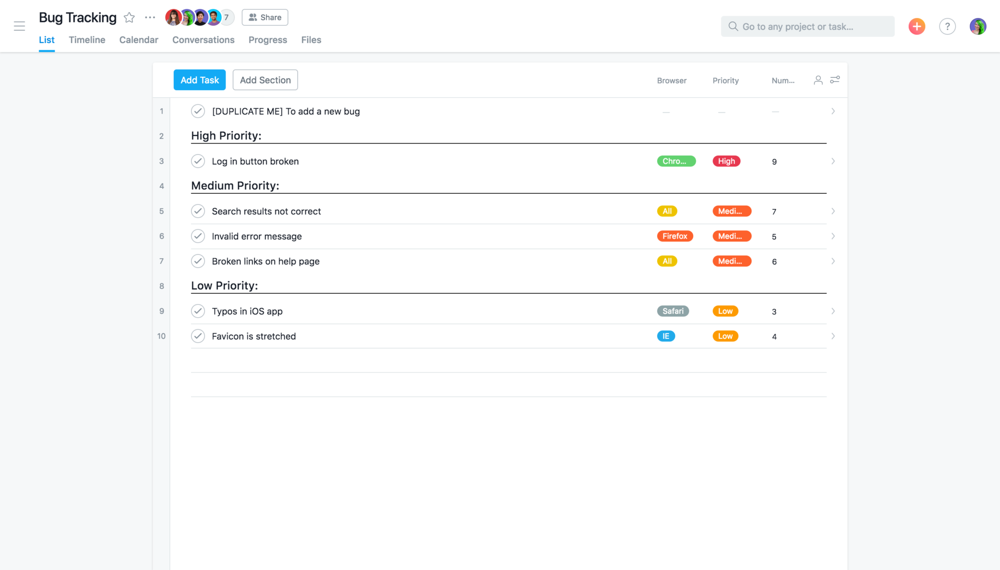
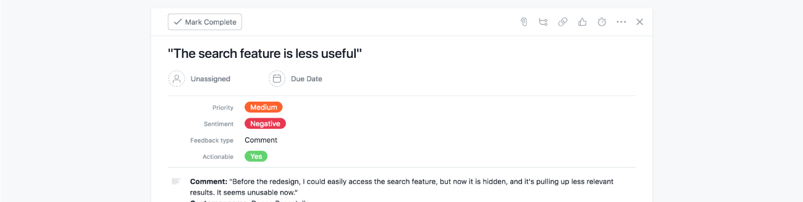
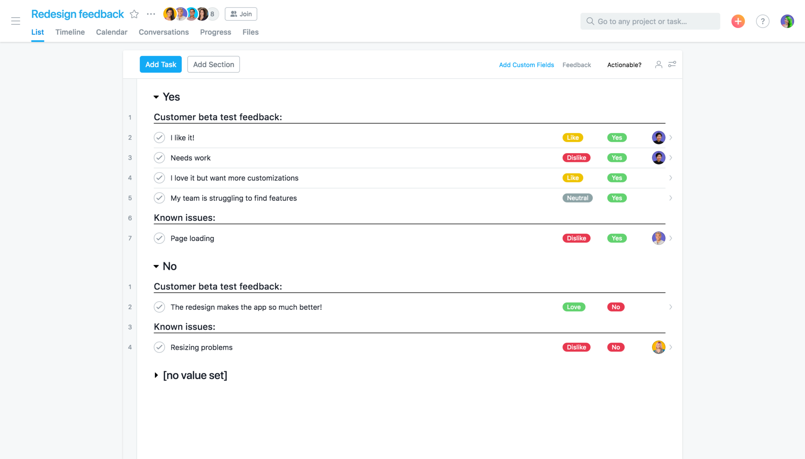

By Jenny Thai
Oct 10, 2018
For product teams, developing a long-term roadmap and launching new products and features are just one part of the job. But once they’ve shipped new products to the market, the work doesn’t end there. They’re also responsible for tracking bugs and incorporating customer feedback into the products they build.
Without efficient processes and the right tools in place, this part of the job can be tough to juggle, or worse, it falls to the wayside. Fortunately, Asana has templates for both bug tracking and customer feedback that make it easier for product teams to manage and organize post-launch work—so they can focus on delighting customers and delivering the best product experiences possible.
Here are four common challenges to bug tracking and managing customer feedback, along with four tips on how to solve them using our templates.
You’ve just shipped a new feature and within minutes, you start getting pinged on Slack, email, or even in person from teammates about a button that isn’t working properly or a request from a user for additional functionality they’d like to see in the future
When bugs reports and customer feedback are reported through different channels, it’s hard for product managers to get a single backlog of all the bugs and user feedback that need their attention—let alone organize and prioritize the most critical ones for immediate action.
Instead of spending your time reacting to ad hoc bug reports and customer feedback coming in from multiple communication channels, create a project in Asana to simplify how bugs and feedback are captured. To keep things extra organized, you can create a separate project for your engineering team to look for incoming bugs and another project for your user researchers to monitor comments and feedback.
To get started with your own bug tracking project, try out our template. Just be sure to let your cross-functional teammates know that this is where they should file any bugs. Similarly, our customer feedback template is designed so that you can collect feedback from customer-facing teams like marketing, sales, and support in one location.
It’s one thing to have a single backlog for bugs or a centralized project for feedback and it’s another to get the information you actually need to take action. Without clear guidelines on what every submission should include, you’re likely to get bug reports or customer feedback with either not enough detail or too much information that’s irrelevant.
The result? You end up wasting time chasing down critical details—like what they were doing when the bug occured—before you can get started on a solution.
In the project where you’re capturing bugs or user feedback, create a [DUPLICATE ME] task that outlines all the information your team needs in order to move forward on a solution or response. If you’re collecting customer feedback, you might ask for people to include the customer’s name and a direct quote of their comment or request, as seen in our customer feedback template.
For bug submissions, you can create a [DUPLICATE ME] task in your bug tracking project (or use our template) that asks for the following details:
Pro tip: To really standardize your submissions, you can connect with one of our forms integrations and use custom fields to collect information uniformly.
With limited time and resources available, product teams need to be able to quickly determine which bugs and issues are the most important to address first (e.g. the login is broken) and which ones are less urgent (e.g. a typo). If you’re also tracking customer feedback, you might find yourself with a mountain of qualitative data, but unsure of what trends and themes to incorporate into the roadmap.
In Asana, custom fields let you organize incoming bugs and user feedback so you and your team know what to focus on first. In your bug trackingproject, for instance, you can set a custom field for priority level (high, medium, low) as well as the number of reports about the same issue to get a sense of how widespread it is. In yourcustomer feedback project, you might include custom fields like priority, sentiment, feedback type, and if it’s actionable or not.
Pro tip: To see only the bugs or user feedback with a “high priority” custom field, create an Advanced Search Report.
When you’re getting bug reports or user feedback from cross-functional teammates, they want to stay informed of the status of their submissions and know that fixes are underway. Client-facing teams, in particular, will want to provide the most up-to-date information to customers. But if you’re coordinating bug fixes over email, chat, or other specialized tools, it’s hard for your teammates to tell who (if anyone) is working on the bug or user request they’ve submitted.
For every bug or piece of feedback that you’ve prioritized for action, you can assign the task to a teammate and set a due date so it’s clear who is responsible for completing the work by a certain time. Make sure to add anyone who needs to be in the loop (such as the person who filed the bug) as a follower to the task, and as work progresses, use task comments to share status updates or ask follow-up questions. When a bug’s been fixed or user feedback has been incorporated, mark the task complete so everyone knows the work is done!
Ready to track bugs or customer feedback in Asana? Try our bug tracking template or customer feedback template today.
Special thanks to Nikki Henderson, Christy Hecht, Logan LeVan, Jessie Beck.
Comments: